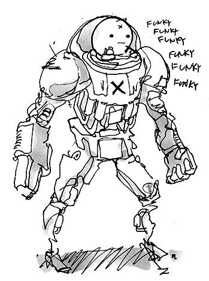

the work of kevin ma
We wanted to create a Box is a puzzle platformer game with a one month development cycle, created in a group of 5. A time tested story: a boy gets stuck in a box (never mind how). Using his wits and a never ending supply of boxes can he manage to escape. Since release, BOX! has been played by over 50,000 players and has been reviewed by game review outlet Jay is Games. The team was Jeremy Cytryn, Renchu Song, Sam Chen and Will Peck on programming, Natalie Diebold and me on design, and Brigid Choi on music. BOX! can be played here. It's a classic
what then is the